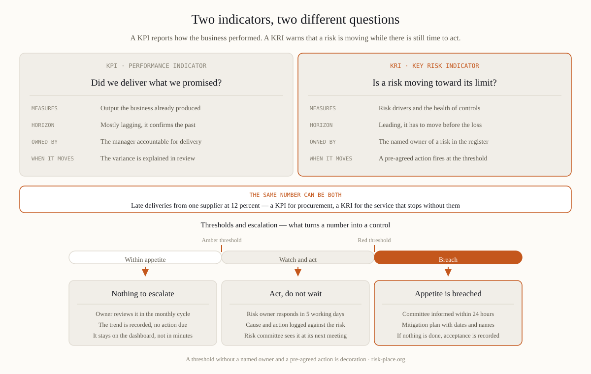

Take one number: the share of orders from your largest supplier delivered late. Shown to the procurement director against a service target, it is a performance indicator. Shown against the risk of losing a critical input, with a level at which someone must qualify a second source, it is a risk indicator. Nothing about the measurement changed. Three attributes turn a number into a KRI — it is attached to a named risk in the risk register, it carries a threshold set in advance, and crossing that threshold obliges a named person to act within a stated time. The test is a single question: what happens on the day this number crosses the line? If the honest answer is "we would discuss it at the next meeting", you are holding a performance measure with ambition.
Open a typical risk report and you will find incidents last quarter, downtime hours, audit findings closed, training completion, and the percentage of plans updated. Each measures something real. None of them warns. They count what has already happened or what activity was performed, so by the time they move, the loss has occurred. Put every candidate through three questions. Does it move before the loss or only after — a count of incidents is a scoreboard, not a signal. Does it have a threshold with a pre-agreed consequence and a named owner, or only a trend line and a comment? Can you name the specific risk it belongs to, by its identifier in the register? An indicator that fails any of the three belongs on the performance dashboard, where it may be genuinely useful. Leaving it in the risk report is worse than deleting it, because it occupies the attention a real signal needed.

Data-led selection produces indicators of whatever is easy to extract. Risk-led selection takes four steps. Take a material risk from the register. Write its causal chain on one line — driver, control, exposure, consequence. Choose two or three indicators on the drivers and on the health of the controls rather than on the outcome. Only then ask where the data lives, and accept a manual monthly count over an automated feed that measures the wrong thing. For continuity and operational resilience risks, three families are productive. Concentration — the share of volume through a single site, route or supplier, and the number of critical processes with one trained person and no deputy. Control health — the proportion of important services whose recovery was tested in the last twelve months, and the average age of unremediated exercise findings. Early stress — sustained overtime in operations, supplier late-delivery rates, unpatched internet-facing systems, and critical contracts expiring within ninety days. Notice how many of the sharpest signals sit outside your own systems, in a supplier's credit rating or a port's congestion index.
Three to five indicators per material risk is enough. Fifteen to twenty-five reaching the board is the practical ceiling, and past that nobody reads the tail. Cadence follows the speed of the risk, not the reporting calendar — monthly for most, weekly or daily for a few operational signals, quarterly only where the driver moves slowly. Prune once a year with a blunt rule: an indicator that has not changed a decision in twenty-four months is either badly designed or attached to a risk that no longer matters, so repair the threshold or remove it. A set that shrinks and sharpens is a reliable sign of a rising maturity level; a set that only grows usually means nobody owns the list. One further discipline repays the effort — record beside each indicator the date it last triggered an action. It is the most honest column in the risk report.
There are three defensible ways to set a threshold, and the first board question is always which one you used. From the historical distribution — the level exceeded in the worst ten percent of the last twenty-four months. From a capacity or engineering limit — the point beyond which recovery within the agreed objective stops being achievable. From the appetite statement — the board's boundary divided down to the process that can actually breach it. Write the derivation beside the number. Every threshold then needs four attributes: an owner by name, a response time, a pre-agreed action, and a record of the last breach. Amber buys attention. Red obliges escalation within hours, not at the next scheduled meeting. Two diagnostics keep the set honest. A threshold never crossed in three years is probably set where nothing happens. A threshold crossed every month is not a limit, it is a budget line silently accepted.
Indicators without appetite are trivia, and appetite without indicators is a statement on a wall. The board's boundaries cascade down into tolerances, then limits, then the thresholds on a management dashboard, and breaches escalate back up the same structure with times attached. If your risk appetite statement contains no number that any indicator in the organisation is tracking, one of the two documents is decorative — building that cascade is set out in our guide to defining and defending risk appetite. The same wiring lets the second line challenge with evidence rather than opinion, which is where indicators meet the three lines model. Designing indicator sets, their thresholds and their escalation routes is covered in module M2 of the ERGP programme.
Indicator design, thresholds and escalation are module M2 of ERGP, the first resilience governance certification fully available in Arabic, also in English.
Explore the ERGP programme